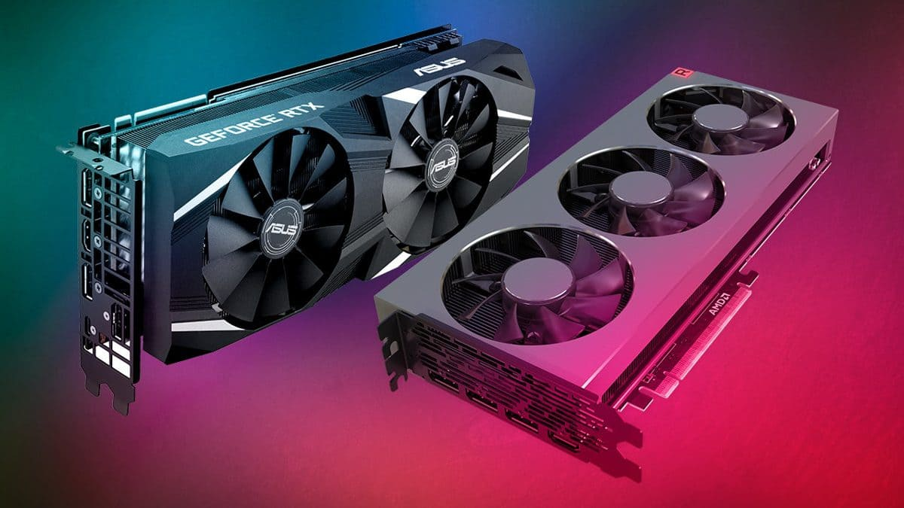

Mouse Logitech MX Master
Sem fio, 8.000 DPI, ergonômico. Favorito da galera que passa horas no computador sem querer sentir o pulso.
R$ 349,90
Ver EspecificaçõesSeleção das peças mais vendidas da semana, com estoque confirmado em tempo real.
Sem fio, 8.000 DPI, ergonômico. Favorito da galera que passa horas no computador sem querer sentir o pulso.
R$ 349,90
Ver Especificações
Switch Red linear, RGB full, ABNT2. Alta durabilidade e resposta tática — o mais pedido pelos devs do grupo.
R$ 279,90
Ver Especificações
GPU com 12 GB de VRAM e suporte a Ray Tracing + DLSS. Boa pra render, IA local e gaming em 1080p/1440p.
R$ 2.399,00
Ver EspecificaçõesA maioria das lojas puxa produto de um banco de dados compartilhado com dezenas de fornecedores, sem controle real de consistência. Na PixelShop, a gestão do estoque é um sistema próprio desenvolvido em Linguagem C — linguagem de baixo nível que nos dá controle total sobre memória, fluxo de execução e tratamento de erros sem overhead desnecessário.
O sistema roda em terminal, com menus interativos via scanf() e printf().
Cada operação — cadastro de produto, venda, atualização de preço — é registrada no
Oracle Database via JDBC no backend, garantindo integridade relacional
com constraints, triggers PL/SQL e controle de transações
(COMMIT e ROLLBACK) em cada operação crítica.
O que você vê no catálogo acima é sempre o reflexo fiel do que está no banco. Não existe
"produto fantasia" — se está aqui, tem no estoque e o preço é o mesmo cadastrado
no insert_data.sql.
Essa integração entre front-end estático (HTML + CSS puro) e uma camada de dados robusta demonstra que é possível construir uma solução séria sem frameworks pesados ou JavaScript desnecessário — alinhado tanto com os requisitos do edital do projeto quanto com boas práticas de desenvolvimento de software sustentável.